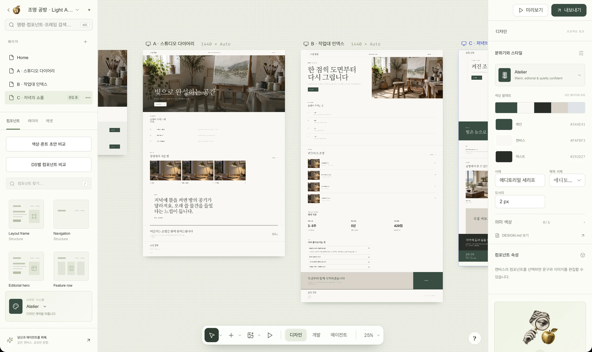
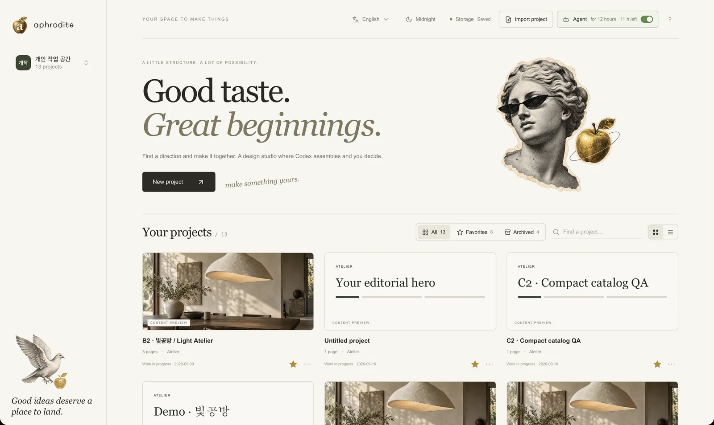
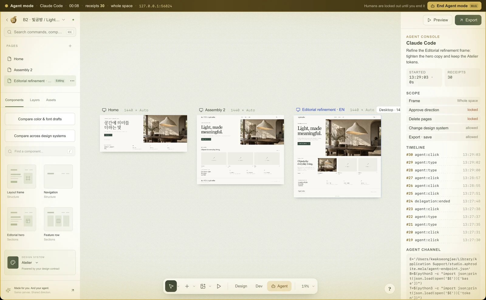
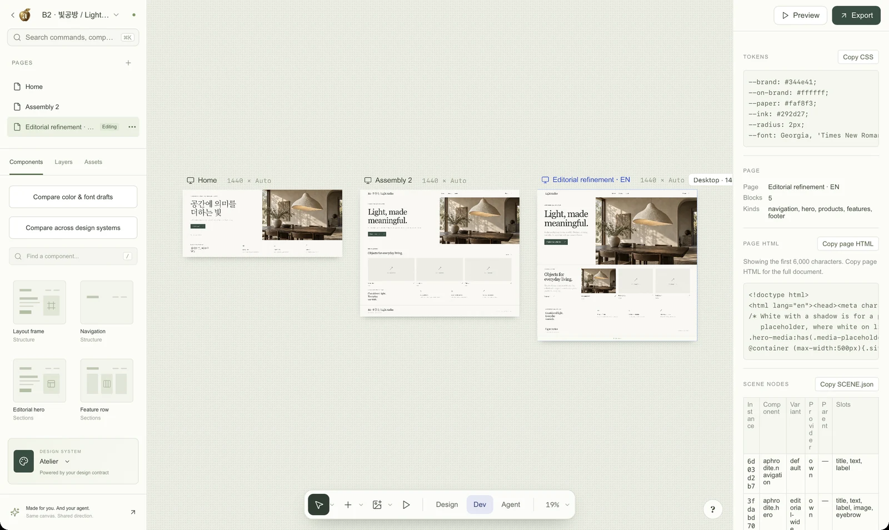
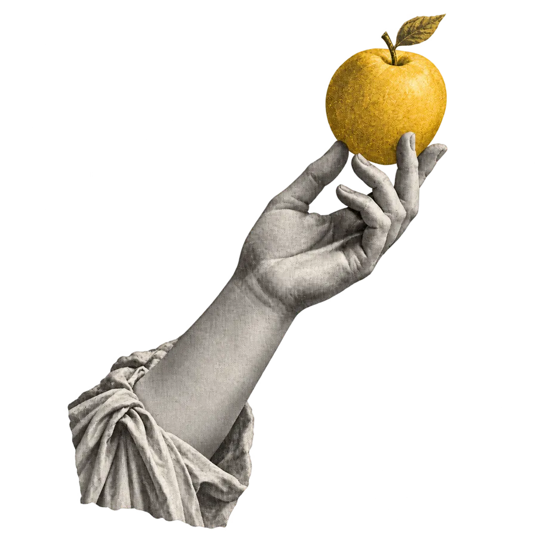

The archive
What you looked at, kept: a picture, an address, a line about why it worked. Beside one project or shared across all of them. Promote one and it becomes the reference the analysis runs on.
Aphrodite is a local-first macOS workbench where you settle the look of a screen in minutes — with real components, real tokens and a design contract your coding agent can follow — before a thirty-minute implementation starts.

The studio. Paper theme, local files, nothing in the cloud.

Home keeps every project as a card with a live preview. Favourites, archive, right-click menus, and a brand kit for the studio itself. Nothing leaves the machine.

Agent mode delegates the same UI to a computer-use agent with a scope you choose. Every edit is receipted, approval stays yours, and you can take control back at any time.

Dev mode turns the inspector into a handoff: component identity, tokens as CSS, the rendered markup, page HTML, a prompt for a coding agent. Copy what you need.
A coding agent can ship a page in half an hour. It can also ship the wrong page in half an hour — wrong layout, wrong tone, a hero nobody asked for — and you find out at the end.
Prompts are a poor place to keep a design decision. Screenshots drift. Figma is a different world from the code.
Deciding should start the build — not another round of rework.

Start from a brief, or drop in a reference. On macOS, Apple Vision reads the copy and layout on-device; local pixel analysis proposes colors and image regions.
Assemble with real components, not mockups. Compare three directions side by side, swap design systems, edit copy and images, check desktop and 375px mobile. Every step is undoable.
Approve the direction and export a contract: PROMPT.md, DESIGN.md, tokens.json, the rendered HTML and a project file — everything Codex or Claude Code needs to build exactly what you approved. Or connect them straight to the workbench: one claude mcp add or codex mcp add, and the built-in MCP server hands them the live design — reading always, changing only after you turn it on.
Projects live on your Mac. No account, no cloud, no generation credits. Export files whenever you want a backup.
Real DOM, named buttons, stable data-actions and keyboard paths. A computer-use agent can drive the same workbench you do.
Atelier, Karrot-inspired, Toss-inspired, Mono. Change one, every page follows. Pull explicit colors from your own DESIGN.md.
OCR with Apple Vision, color and region candidates from pixels. Nothing leaves your machine.
Honest layout variants of the same components — not generated guesses. Pick one, keep the rest.
Any change to text, images, system or structure clears the approval. What you export is what you saw.
What you looked at, kept: a picture, an address, a line about why it worked. Beside one project or shared across all of them. Promote one and it becomes the reference the analysis runs on.
What you keep choosing, written where you can cross it out. Every line carries a count and the ids it came from — not “you like serif”, but “serif headings — 6 of 7 projects”. Delete a line and it does not come back.
Off by default. Off means nothing is derived, not merely nothing shown.
github.com
On its own, at most every six hours. Can be switched off.
github.com
The font file you asked for. Enforced in Rust, not by convention.
the address you typed
Reads that one page for its title and picture.
The first happens by itself; the other two only because you pressed something. None of them carries anything about you or your work — and there is no switch anywhere that would change that.
First launch: if macOS says the app can't be checked for malicious software, right-click the app and choose Open once.